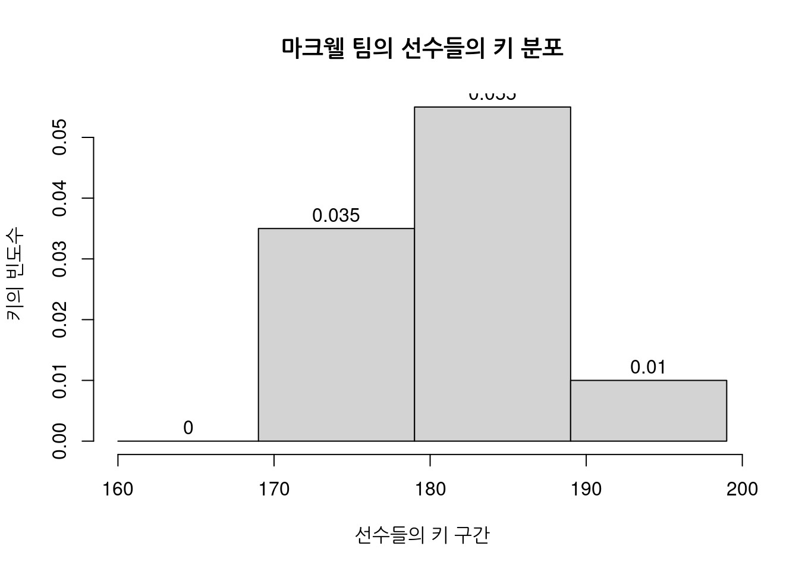
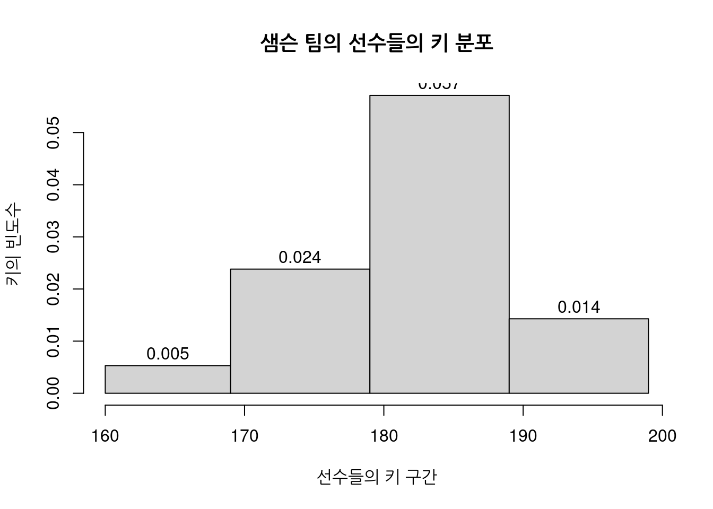

markwell = c(170, 172, 175, 176, 176, 176, 178, 181, 182, 183, 183, 183, 185, 185, 187, 188, 188, 189, 190, 195)04 육상팀 달리기 속도의 도수분포 분석
마크웹 쿠거스 육상 팀의 코치는 그의 팀원들의 키를 라이벌인 샘슨 호크스팀과 비교하려고 합니다. 그는 달리기 속도와 키 사이에 상관관계 가 있는지 궁금했습니다.
데이터의 수집 : 어떤것을 분석할 것인가?
코치는 키를 작은키에서 큰키 순으로 정리했습니다.
마크웰 쿠거스:
샘슨 호크스:
samson = c(169, 175, 176, 176, 178, 179, 180, 183, 183, 186, 186, 186, 187, 187, 187, 187, 187, 188, 190, 191, 192)이렇게 정리한 자료(데이터:data)를 시각적으로 만들것입니다.
도수(빈도:Frequency)
도수분포표(빈도표:frequency table)와 히스토그램(histogram)을 살펴보겠습니다.
(빈)도수(빈도:Frequency)는 어떤 일이 얼마나 자주 발생하는지에 대한 척도입니다.
도수분포표(빈도표:Frequency table)는 데이터 값이 얼마나 자주 발생하는지 측정하고 시각적으로 표시하는데 사용합니다.
데이터의 분류 : 구분하여 분류 (계급:interval)
코치는 두개의 팀의 키의 자료를 구간으로 나누어서 집계를 하고 그것을 숫자로 표현하였습니다.
조사한 자료로 키의 간격(interval)을 10단위로 계급(class)화 합니다. mar
간격
160 - 169
170 - 179
180 - 189
190 - 199
계급의 수(Number of class)는 4개가 됩니다.
표를 통해 시각화
성적과 등급을 시각적으로 표현하기 위해 (빈)도수분포표(빈도표:frequency table)을 만들 것입니다.
주어진 범위에 포함하는 각 선수의 키 대해 X로 집계합니다.
두팀의 키의 도수분포표(빈도표:frequency table)
|마크웰 |샘슨
----------|--------------------------|---------------------
간격 | 집계 빈도 | 집계 빈도
160 - 169 | | x 1
170 - 179 | xxxxx xx 7 | xxxx 5
180 - 189 | xxxxx xxxxx x 11 | xxxxx xxxxx xx 12
190 - 199 | xx 2 | xxx 3 이 집계표를 통해 두 팀의 키의 분포를 비교할 수 있습니다.
두팀에서 대부분의 선수의 키가 180-189 인 것을 알 수 있습니다.
히스토그램 그래프를 만들어서 표현
다음으로 코치는 히스토그램을 만들었습니다.
x축과 y축을 이용해 데이터를 표시하는 점에서 막대그래프와 비슷합니다.
히스토그램은 그래프사이에 간격이 없고 막대사이에 간격이 동일합니다.
이 간격은 도수분포표의 계급(간격:interval)과 같습니다.
값을 넣어서 표를 완성해볼까요?
#X축 설명
x_lab <- "선수들의 키 구간"
#y축 설명
y_lab <- "키의 빈도수"
#계급간 구간(interval)
intervals <- c(160, 169, 179, 189, 199)마크웰팀의 히스토그램은 다음과 같이 나타납니다.
# markwell팀의 표이므로 `markwell`을 넣어주어요.
#표 제목
title <- "마크웰 팀의 선수들의 키 분포"
hist(markwell, breaks=intervals, main=title, xlab=x_lab, ylab=y_lab, labels=T)
샘슨팀의 히스토그램
#표 제목
title <- "샘슨 팀의 선수들의 키 분포"
#아래 `samson`팀의 점수가 들어가요.
hist(samson, breaks = intervals, main = title, xlab = x_lab, ylab = y_lab, labels = T)
히스토그램은 도수분포표(빈도표:frequency table)와 동일한 정보를 표현합니다.
두팀 모두 180-189구간에 가장 많은 선수들이 있음을 알 수 있습니다.
코거스는 170-179구간 쪽에 선수들이 더 많은 반면 호크스는 더 큰 키의 구간에 선수들이 더 많습니다.
호크스가 키에 있어 더 유리함을 알 수 있습니다.